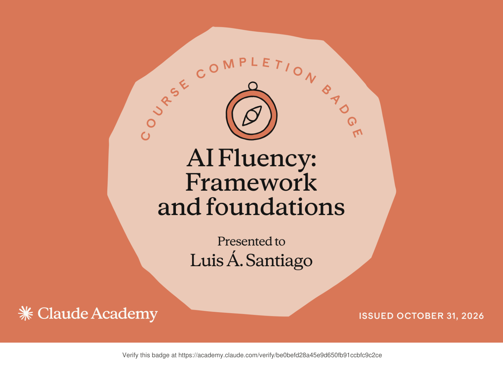
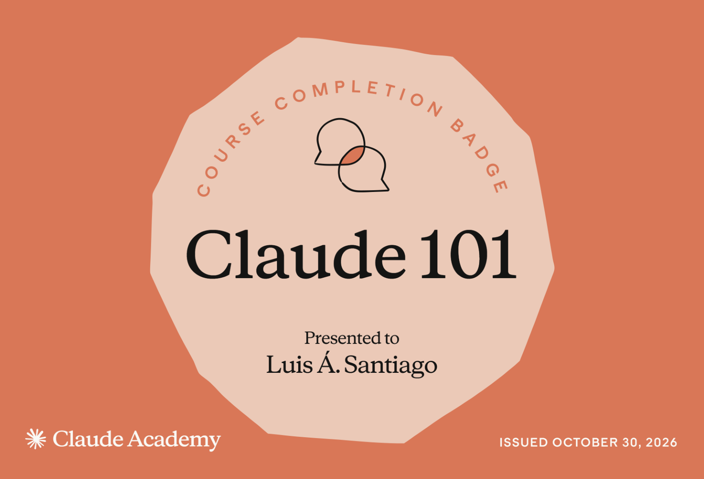

CPU Scheduling Simulator
Built five scheduling modes—including round robin, FCFS, shortest-job-first, priority, and multilevel feedback queue—using custom linked-list data structures. Produces Gantt charts and process-level timing metrics.
Computer engineering · Puerto Rico
I'm Luis Santiago, a Computer Engineering student at Universidad Ana G. Méndez. I connect software, applied research, and technical problem-solving to build things that matter.
// Engineer · Researcher · Builder const curiosity = "always on"; const focus = [ "software systems", "applied research", "real-world impact" ]; build(ideas, curiosity); ▌
01 / About me
I'm pursuing a B.S. in Computer Engineering at UAGM in Gurabo, Puerto Rico. My interests span programming, problem-solving, research, and practical engineering applications.
From designing scheduling algorithms in C++ to interpreting microscopy imagery for nanomaterials research, I enjoy learning across disciplines and translating complicated concepts into usable solutions.
02 / Selected projects
Academic and independent work exploring algorithms, numerical computing, image processing, and useful tools.
Built five scheduling modes—including round robin, FCFS, shortest-job-first, priority, and multilevel feedback queue—using custom linked-list data structures. Produces Gantt charts and process-level timing metrics.
Compared grayscale and RGB image reconstructions across SVD ranks using visual quality, storage estimates, singular-value decay, and relative Frobenius error. Implemented a search for approximations below 10% relative error.
Worked on an intelligent road innovation concept during the High School Energy Summer Camp. The team placed first in the June 2023 ENGITHLON competition.
Created a Python script that renders a PDF page at 300 DPI, selects color-specific regions in HSV space, and combines color masking, edge detection, and morphological filtering to isolate colored content. Exports a mask, an extracted image, and a transparent PNG.
Selected projects are described here without public code links until repositories or approved demonstrations are available.
03 / Experience & research
Technical work across engineering assessments and experimental research.
Engineering experience
Trained in ASHRAE Level II assessment procedures and supported compressed-air leak assessments at Nelipak and lighting/HVAC assessments at Banco de Desarrollo de Puerto Rico. Used Excel and AirMaster+ in energy savings analyses and technical recommendations.
Undergraduate research
Investigated ZnO-based photocatalysts for hydrogen production and ciprofloxacin degradation. Conducted experimental work and analyzed HRTEM/HRSEM imagery to interpret material characteristics. Presented findings at PRISM and the ACS Junior Technical Meeting.
04 / Beyond the classroom
Collaboration, outreach, and sharing enthusiasm for STEM.
Served on the UAGM chapter's board (Aug 2025–Aug 2026), supporting event planning, weekly meeting documentation, promotional materials, and member engagement.
Participated in National Chemistry Week and the ACS Chemistry Festival to help connect communities with the chemical sciences.
Engaged with UAGM's Honors Program and campus activities, bringing together learning, community, and interdisciplinary interests.
Ready for your event photos, research posters, project screenshots, and participation documentation. Assets can be added before public launch.
05 / Credentials & recognition
Official verification links are provided whenever available.

Course completion badge covering foundational AI fluency concepts and frameworks.
View official badge Open certificate PDF
Introductory Claude Academy course completion badge.
View official badge Open certificate PDFMathWorks
Foundational training in MATLAB programming, data operations, and technical computing.
View certificateENGITHLON · High School Energy Summer Camp
Team award for Innovación Vial Inteligente, an intelligent road innovation project.
Award recognition06 / Let's connect
I'm interested in internships, technical collaborations, and opportunities to keep learning across software and engineering.